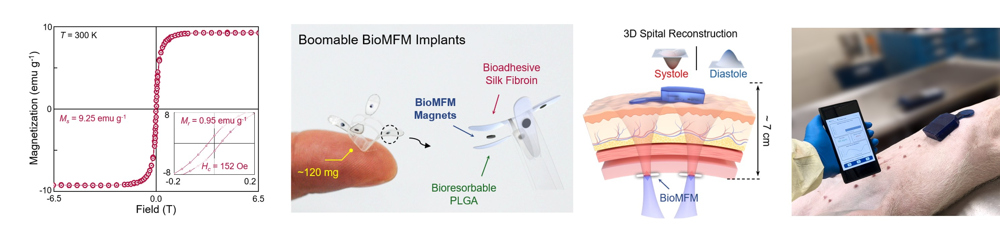

· Research highlight
Our Nature Materials research featured in a Research Briefing
Our study, “Bioresorbable Metal-Free Molecular Magnets Enable Untethered Organ Monitoring,” is featured in a Nature Materials Research Briefing. Yizhang Wu co-authored the accompanying briefing, “Metal-free magnets for bioresorbable biosensors,” with Wubin Bai, introducing the work and its implications for temporary, wireless physiological monitoring.
